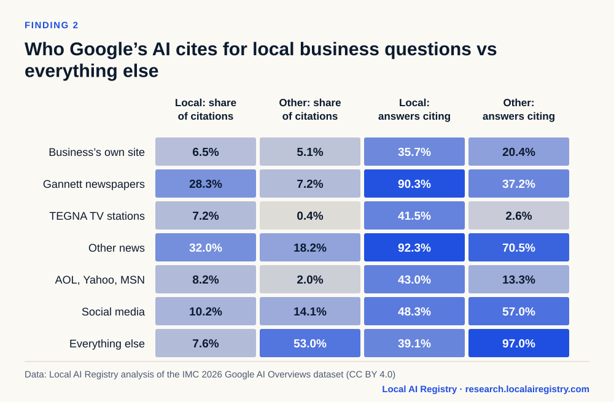
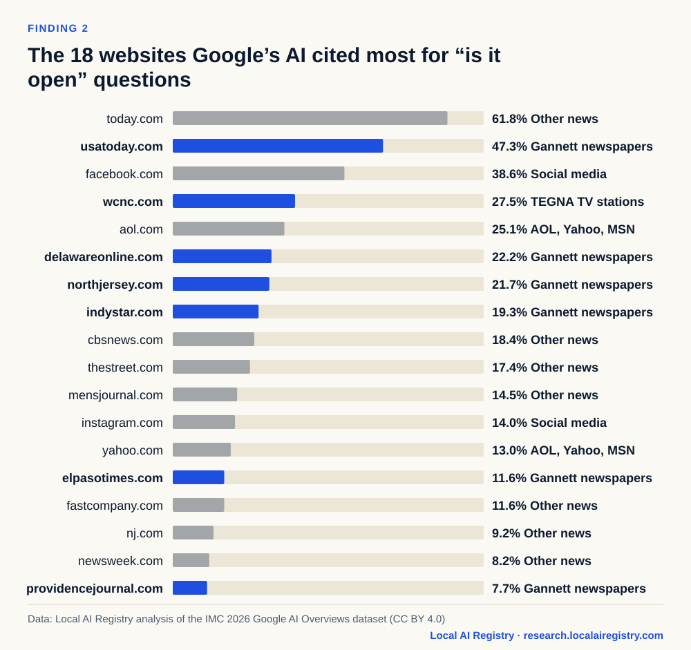
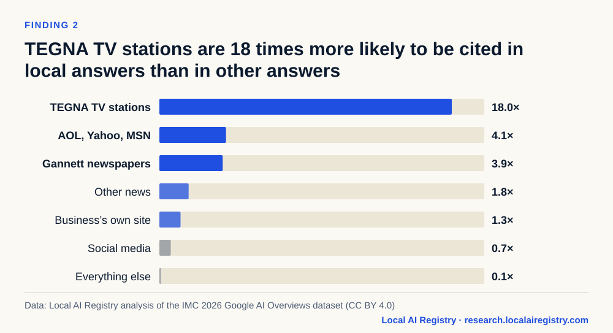

Does press coverage help a local business get recommended by AI?
Why AI weighs the press
Your website will always say you are great. An assistant knows that, so it looks for someone else saying it. Local news, trade publications and respected industry sites act as outside proof. When an assistant searches the web to answer a question, those pages are often among the sources it reads.
In a 75,000-brand study, the top correlate of AI visibility was YouTube and branded web mentions (0.737), not links or pages (Ahrefs, cited in our white paper The Convergence). The Convergence
News outlets supplied 67.5% of the citations in Google's AI answers about local businesses. The Local Answer Gap, LAIR‑R‑2026‑001
What does the research say?
From The Local Answer Gap, our study of how Google's AI answers local business questions. Every number links to its chart.









Want to know what AI says about you right now?
We run your business through ChatGPT, Gemini and Google AI, live, in a free 30‑minute check.
What we do for you
You choose what the news is, we draft the release, and nothing goes to the wire until you have signed it off.
The topic is yours. A release is irreversible once a wire has it, so we never pick the subject and we never send one without your approval.
The draft is held to the strictest reading of our writing standard. No outcome claim, no credential we do not hold on file, no statistic nobody measured.
Each publication that picks it up is recorded against your account with its address, so the coverage is a list of links rather than a number.
What you get
- A drafted release on a topic you picked, in your voice.
- A named reminder while it waits, because nothing sends this one for you.
- The publications that carried it, each with the article address.
- The same list printed in your monthly report.
How it runs
- You pick the topic From your own news. An opening, a new service, a hire, a piece of equipment.
- We draft it The news is the first sentence. The draft carries only facts we hold on you or facts you supplied for this release.
- You sign it off A press release never goes out unless you approve it. If the deadline passes without you sending it, we cancel the order, tell you we did not buy it, and draft a fresh one on the next round.
- Coverage is recorded Every pickup is stored with its publication and its address. If a distributor quotes a reach number, we show it as their number, never as something we measured.
Why it moves the AI answerA mention on a publication you do not own is the one kind of evidence about you that you did not write, which is why an assistant weighs it differently from your own site.
What counts
- Local news stories, features and expert quotes.
- Trade and industry publications.
- Interviews and podcasts with show notes that name you.
- Award lists from real organizations.
Paid press releases that only appear on syndication networks count for much less. They are easy to buy, so they prove little.
Which sources AI leans on harder for local answers
Lift compares a source's share in local answers with its share everywhere else. Local TV station sites jump the most. Source: The Local Answer Gap, Local AI Registry Research, 2026.
See the data
| Business’s own site | 1.3× |
| Gannett newspapers | 3.9× |
| TEGNA TV stations | 18× |
| Other news | 1.8× |
| AOL, Yahoo, MSN | 4.1× |
| Social media | 0.7× |
| Everything else | 0.1× |
How to earn it
Give reporters something new: a local trend you can see in your business, a useful guide for the season, an expert view on a news story in your field. Answer journalist requests in your specialty. Every story you earn should spell your business name exactly as it appears in your listings and link to your site.
Industries where it matters most
Related signals and terms
Check yourself in two minutes
Tick what is true for your business today. The score updates as you go.
0 of 4 done. Start with the first item you couldn't tick.
More from Local AI Registry
Frequently asked questions
Is one article enough?
One good article helps, but AI looks for a pattern. A steady trickle of mentions over months is more convincing than a single burst.
Should I buy press release distribution?
It can help announce real news, but on its own it rarely moves AI recommendations. Earned coverage is what assistants treat as proof.
Do you choose what the press release says?
You choose the topic. We write it. A wire placement cannot be recalled, so the subject is never ours to pick.
What happens if I do not get to it in time?
We cancel the order and tell you we did not buy it. Nothing publishes because a deadline passed.
How do I know where it was published?
Each pickup is recorded with the publication name and the article address, and the list is printed in your monthly report.
Named in AI in 90 days. Guaranteed.
Book a call and we’ll show you, live, what AI says about you today. If we miss the 90 days, we keep working for free until AI names you.